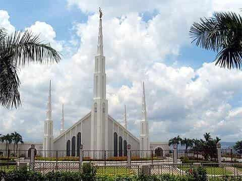

Salt Lake Temple - Utah, USA (1893)Rome Italy Temple - Rome, Italy (2019)Paris France Temple - Le Chesnay, France (2017)

Tokyo Japan Temple - Tokyo, Japan (1980)London England Temple - Lingfield, England (1958)Bern Switzerland Temple - Zollikofen, Switzerland (1955)Manila Philippines Temple - Quezon City, Philippines (1984)São Paulo Brazil Temple - São Paulo, Brazil (1978)Johannesburg South Africa Temple - Johannesburg, South Africa (1985)